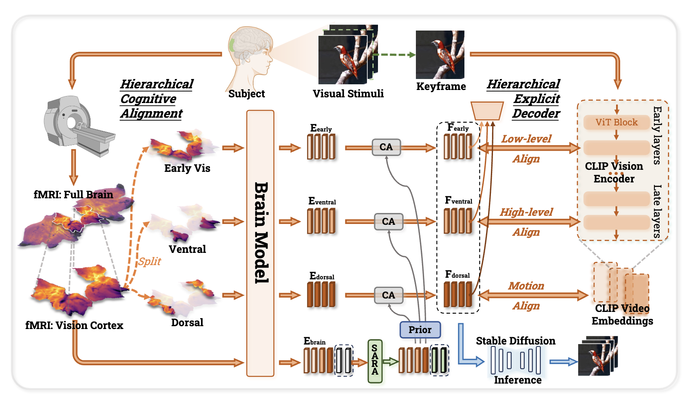

View architectureA Cognitive Process-Inspired Architecture for Subject-Agnostic Brain Visual Decoding
Reconstructing visual experiences through a hierarchy inspired by the visual cortex, with generalization to unseen subjects.
View results
1 / 6
Six published frames per example; not the original video or live inference. Source figure ↗
Research details & citation
I led the research project and conducted qualitative and quantitative experiments. VCFlow combines hierarchical cognitive alignment, a subject-agnostic adapter, and an explicit decoder to reconstruct video from fMRI.
@article{lu2025vcflow,
title={A Cognitive Process-Inspired Architecture for Subject-Agnostic Brain Visual Decoding},
author={Lu, Jingyu and Wang, Haonan and Zhang, Qixiang and Li, Xiaomeng},
journal={arXiv preprint arXiv:2511.02565},
year={2025},
note={Accepted at ICLR 2026}
}